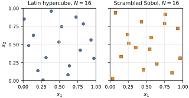
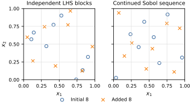

Sobol Sequences#
Low-discrepancy points#
Let \(d\) be the number of input dimensions and let
be a design with \(N\) points. For \(\mathbf{u}=(u_1,\ldots,u_d)\in[0,1]^d\), define the anchored box
Its local discrepancy is
Here \(\mathbf{1}\{\cdot\}\) is one when its condition is true and zero otherwise. The first term is the fraction of design points in \(B_{\mathbf{u}}\); the second is the box’s volume. The star discrepancy is
A low-discrepancy sequence is constructed so that discrepancies of its successive point sets remain small. This is a space-filling property, not a statement that the points are independent.
An unscrambled Sobol sequence is a deterministic digital sequence built from binary direction numbers. We use the direction numbers of Joe and Kuo (2008) through SciPy’s implementation (Virtanen and others, 2020). In practice, we scramble the sequence and fix a seed. Scrambling preserves its digital balance while providing randomized replicates for error assessment (Owen, 1998).
Sobol balance is strongest for prefixes of size \(N=2^m\), where \(m\) is a nonnegative integer. We therefore use random_base2(m) and do not skip or thin points.
from scipy.stats import qmc
d = 2
m = 4
N = 2**m
seed = 42
lhs_points = qmc.LatinHypercube(d=d, seed=seed).random(n=N)
sobol_points = qmc.Sobol(d=d, scramble=True, seed=seed).random_base2(m=m)
fig, axes = plt.subplots(
1,
2,
figsize=(4.5, 2.45),
sharex=True,
sharey=True,
constrained_layout=True,
)
designs = [
(lhs_points, "Latin hypercube", BOOK_COLORS["blue"], "o"),
(sobol_points, "Scrambled Sobol", BOOK_COLORS["orange"], "s"),
]
grid_positions = np.linspace(0.0, 1.0, 5)
for ax, (points, title_text, color, marker) in zip(axes, designs):
ax.scatter(
points[:, 0],
points[:, 1],
s=24,
color=color,
marker=marker,
edgecolor="black",
linewidth=0.35,
)
ax.set(
xlim=(0.0, 1.0),
ylim=(0.0, 1.0),
xticks=grid_positions,
yticks=grid_positions,
xlabel=r"$x_1$",
ylabel=r"$x_2$" if ax is axes[0] else None,
title=f"{title_text}, $N={N}$",
aspect="equal",
)
finalize_axes(axes, keep_box=True)
for ax in axes:
ax.grid(color="0.86", linewidth=0.6)
plt.show()

A Latin hypercube design places exactly one projected point in each of \(N\) equal intervals along every coordinate. A Sobol sequence instead balances points over a hierarchy of binary, or dyadic, boxes. In this two-dimensional example, each square in the \(4\times4\) grid contains one Sobol point. Neither property makes the points independent, and a single figure does not establish a universal ranking; the two methods impose different kinds of balance.
Continuing a design#
An ordinary \(N\)-point Latin hypercube is a finite design. If we generate a second \(N\)-point Latin hypercube independently and append it, each block is still a Latin hypercube, but their \(2N\)-point union need not be one. This loss of stratification does not by itself introduce bias; it removes the original Latin-hypercube guarantee. Specialized nested or sequential Latin hypercubes require a separate construction.
A Sobol sequence is inherently ordered. Continuing the same sequence from \(2^m\) to \(2^{m+1}\) points adds a new block while making the full, larger prefix balanced at the new power of two. The following comparison appends eight points to an initial eight-point design.
d = 2
m_initial = 3
N_initial = 2**m_initial
lhs_initial = qmc.LatinHypercube(d=d, seed=42).random(n=N_initial)
lhs_added = qmc.LatinHypercube(d=d, seed=43).random(n=N_initial)
lhs_combined = np.vstack((lhs_initial, lhs_added))
sobol_engine = qmc.Sobol(d=d, scramble=True, seed=42)
sobol_initial = sobol_engine.random_base2(m=m_initial)
sobol_added = sobol_engine.random_base2(m=m_initial)
sobol_combined = np.vstack((sobol_initial, sobol_added))
fig, axes = plt.subplots(
1,
2,
figsize=(4.5, 2.7),
sharex=True,
sharey=True,
constrained_layout=False,
)
fig.subplots_adjust(left=0.12, right=0.98, bottom=0.25, top=0.86, wspace=0.16)
continued_designs = [
(lhs_initial, lhs_added, "Independent LHS blocks"),
(sobol_initial, sobol_added, "Continued Sobol sequence"),
]
for ax, (initial, added, title_text) in zip(axes, continued_designs):
ax.scatter(
initial[:, 0],
initial[:, 1],
s=28,
facecolors="none",
edgecolors=BOOK_COLORS["blue"],
marker="o",
linewidth=1.1,
label="Initial 8",
)
ax.scatter(
added[:, 0],
added[:, 1],
s=28,
color=BOOK_COLORS["orange"],
marker="x",
linewidth=1.1,
label="Added 8",
)
ax.set(
xlim=(0.0, 1.0),
ylim=(0.0, 1.0),
xticks=grid_positions,
yticks=grid_positions,
xlabel=r"$x_1$",
ylabel=r"$x_2$" if ax is axes[0] else None,
title=title_text,
aspect="equal",
)
finalize_axes(axes, keep_box=True)
for ax in axes:
ax.grid(color="0.86", linewidth=0.6)
handles, labels = axes[0].get_legend_handles_labels()
fig.legend(
handles,
labels,
loc="lower center",
bbox_to_anchor=(0.5, 0.02),
ncol=2,
)
plt.show()

Measuring space filling#
Different discrepancy criteria summarize the local mismatch \(\Delta(\mathcal{P}_N,\mathbf{u})\) in different ways. The supremum above defines star discrepancy. We will use the \(L^2\)-star discrepancy,
The integral averages the squared local discrepancy over all \(\mathbf{u}\in[0,1]^d\). SciPy computes this quantity with method="L2-star". For designs with the same \(N\) and \(d\), a smaller value indicates more even coverage; it is a diagnostic, not a guarantee that every integrand will be estimated more accurately.
lhs_l2_star = qmc.discrepancy(lhs_combined, method="L2-star")
sobol_l2_star = qmc.discrepancy(sobol_combined, method="L2-star")
print(f"L2-star discrepancy of the two-block LHS design: {lhs_l2_star:.6f}")
print(f"L2-star discrepancy of the continued Sobol design: {sobol_l2_star:.6f}")
L2-star discrepancy of the two-block LHS design: 0.066210
L2-star discrepancy of the continued Sobol design: 0.035254
For this fixed, seeded example, the continued Sobol design has the smaller \(L^2\)-star discrepancy. That numerical ordering need not hold for every dimension, seed, sample size, or integrand. The robust distinction is structural: a standard Latin hypercube is not automatically extensible, whereas a Sobol sequence is designed to be continued through power-of-two prefixes.
From points to an integral#
Let \(f:[0,1)^d\rightarrow\mathbb{R}\) be an integrable model response and define
Using design points \(\mathbf{x}_1,\ldots,\mathbf{x}_N\), we approximate \(I\) by
With an unscrambled Sobol sequence, \(\widehat{I}_N\) is a deterministic quadrature approximation. With a valid random scramble, it is a randomized, unbiased estimate, and independent scrambles can be used as independent replicates for error assessment (Owen, 1998). The points within one scramble are dependent, so the usual independent-sample Monte Carlo standard error must not be applied to them.
For nonuniform inputs, the unit-cube points must be transformed to the target input distribution before evaluating the model. The next section uses such integration designs to estimate variance components and Sobol sensitivity indices. A Sobol sequence chooses model-evaluation points; a Sobol sensitivity index quantifies input importance. These are related tools, not the same object.